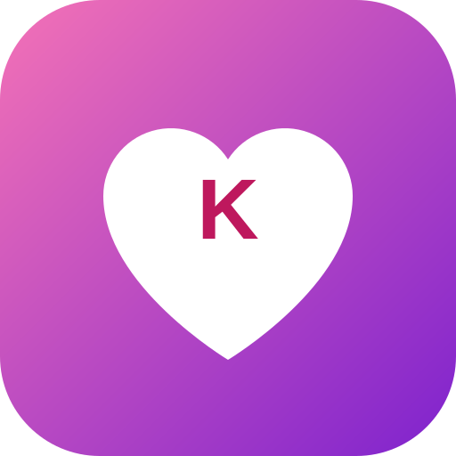

K-Love 💗 Beta
Deine K-Dramen an einem Ort: sammeln, bewerten, neue Lieblingsserien entdecken und die schönsten OSTs hören.
Für Windows herunterladenWas K-Love kann
Entdecken – Empfehlungen nur für dich
K-Love schlägt dir Dramen vor, die zu deinen Bewertungen passen – neue Serien von Netflix, Disney+, Viki & Co. genauso wie ältere Klassiker, die du noch nicht kennst.
- Je besser du ein Drama bewertest, desto mehr zählen seine Genres und Schauspieler.
- Jeder Vorschlag sagt dir, warum – z. B. „Mit Gong Yoo – aus Goblin (★ 10)“.
- Du wählst, welche Streaming-Dienste du hast, und siehst nur, was du auch schauen kannst.
- Ein Klick, und das Drama steht mit Poster auf deiner Merkliste.
Musik – deine OSTs als Playlists
Beim Speichern eines Dramas holt K-Love automatisch die OST von YouTube – als einzelne Songs mit Titel und Interpret.
- Alle Songs deiner Dramen an einem Ort, durchsuchbar.
- Eigene Playlists zusammenstellen, sortieren und abspielen – auch zufällig.
- Mini-Player: Die Musik läuft weiter, während du durch die App blätterst.
- Mit eingebautem Werbeblocker für die YouTube-Videos.
Sammeln & bewerten
Alle Dramen mit Status, Notizen, Favoriten und Bewertung nach Story, Schauspiel, Chemie, OST und Ende.
Poster automatisch
Titel eintippen – K-Love findet Poster, Genres und Infos von selbst. Passt es nicht, blätterst du weiter.
Statistiken
Wie viele Folgen, welche Genres, welche Lieblingsschauspieler?
Automatische Sicherung
Dein Profil wird nach jeder Änderung als Datei in deinen Dokumenten gespeichert – auf Wunsch auf OneDrive.
Deine Daten bleiben bei dir
Kein Konto, keine Anmeldung, kein Abo. Alles liegt auf deinem PC.
Mit Liebe gemacht
Ein kurzer Lofi-Song zum Start – stummschaltbar mit einem Klick.
Beta – hilf mit 💌
K-Love ist noch in der Beta. Wenn dir etwas auffällt oder du dir etwas wünschst: In der App unter Einstellungen → Feedback senden bzw. Fehler melden erreichst du uns direkt. Stürzt doch einmal etwas ab, bleiben deine Dramen gespeichert.
Installieren
- Herunterladen – oben auf den Button klicken und die
K-Love-Setup-Datei starten. - Windows-Hinweis bestätigen – erscheint „Der Computer wurde durch Windows geschützt“, auf Weitere Informationen → Trotzdem ausführen klicken. Die App ist nur nicht kostenpflichtig signiert.
- Loslegen – K-Love installiert sich ohne Admin-Rechte und legt eine Desktop-Verknüpfung an.
Updates
K-Love sagt Bescheid, wenn es eine neue Version gibt, und zeigt dir vorher, was sich geändert hat. Du entscheidest: jetzt aktualisieren, morgen oder in einer Woche erinnern oder überspringen. Ohne deine Zustimmung wird nichts geladen oder installiert.
Poster, Infos und Empfehlungen stammen aus den freien Datenbanken TVmaze und Wikidata. K-Love ist nicht mit Netflix oder anderen Streaming-Diensten verbunden.